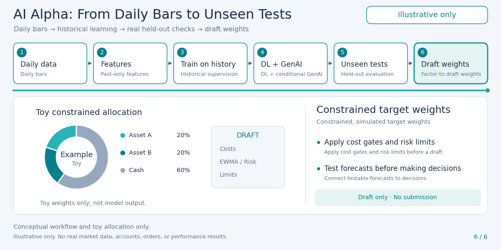

| Asset | Past 60-session return | Rank percentile |
|---|
AI quantitative research · learn the principles
Understand how models learn.
Then connect scores to decisions.
From daily bars, past-only features and historical targets to deep learning, generative augmentation, real held-out evaluation and constrained portfolios. Make every step explainable and testable.
Public teaching demo · all numbers are illustrative · no account or trading connection
From data to decisions
One animation, the whole research process

Use the GIF for a quick README overview. Explore the formulas interactively below. The animation contains no actual backtest performance.
01
Four daily rules
Momentum & trend: make simple rules explainable
Cross-sectional momentum compares assets with one another. Trend rules decide whether an asset itself is eligible to hold. Choose a rule and change an illustrative price to inspect its signal. All parameters are research examples.
Determine the signal after close; simulate execution at the next session’s open. The 60, 50/200 and 55/20-session windows are examples, not validated optimal parameters. Daily rules can be backtested; minute-level research requires separate intraday data, costs and execution checks.
Rankings, binary states and channel rules are trading signals, not calibrated future-return forecasts. Do not compare them directly with a cost threshold measured in bps. Position sizing, fees and cash still need a common backtest.
Run actual experiments in the research app
Choose your moomoo CSV, an online historical snapshot or an explicitly labeled synthetic example. This page only explains rules: it fetches no market observations and shows no actual strategy returns.
Explore the mechanics
Risk estimates change sizing, not necessarily direction forecasts
EWMA: how much weight goes to the latest shock?
Assume an old daily volatility of 2%. Change the smoothing coefficient and the latest observed return to inspect the next-day risk estimate.
σ²new = λ · σ²old + (1 − λ) · r²
Estimated next-day volatility
The bar shows mixing coefficients, not shares of total variance. This example assumes zero mean; a full portfolio also needs cross-asset covariances.
From forecast scores to target weights
Three hypothetical assets have five-day excess-return forecasts of 1.2%, 0.5%, and 0.05%, and annual volatility of 30%, 20%, and 40%. Apply the cost gate before sizing risk.
| Asset | Forecast | Pass gate | Target weight |
|---|
Residual cash
Assume a minimum cash reserve of 20% and pairwise correlation of 0.4. Caps are not redistributed; risk scaling only reduces positions. No executable orders exist here.
The mathematics
Know where each number comes from
Prediction targets and execution timing
yi,t = Oi,t+h+1 / Oi,t+1 − Ob,t+h+1 / Ob,t+1
Version one uses h = 5: form a signal after close, measure the five-session return from the t+1 open to the t+6 open, and subtract the same SPY return. Historical training can use outcomes known later; a live forecast cannot use outcomes that have not happened.
How deep learning updates parameters
ŷ = fθ(X) L = mean[(ŷ − y)²]
θ ← θ − η · ∇θL
θ ← θ − η · ∇θL
The network predicts, measures its error, then adjusts parameters using gradients. Fit preprocessing only on training data. This is the basic gradient idea; an implementation may use an optimizer such as Adam.
What generative AI adds
yk = √ᾱk y0 + √(1 − ᾱk) ε
pθ(y | Xpast)
pθ(y | Xpast)
A conditional diffusion model learns from training-period outcomes and gradually denoises samples paired with historical inputs. Synthetic samples are not new market evidence. Compare against real-data training and resampling on the same real held-out period.
What IC and portfolio equity each measure
Rank ICt = corr(rank(ŷi,t), rank(yi,t))
Within the same date, compare forecast rankings with realized-return rankings across stocks. IC measures predictive association. Equity also depends on position sizing, market exposure, costs and timing. Overlapping five-day labels are not independent observations.
How factors become decisions
w̃i ∝ 1 / σi
σp = √(wᵀΣw)
s = min(1, budget / σp)
σp = √(wᵀΣw)
s = min(1, budget / σp)
Forecast scores first pass a cost gate. Eligible assets receive inverse-volatility weights, position caps, cash reserves and portfolio-risk limits. A unitless ranking score must be calibrated on separate validation data before comparison with return costs.
Why start with EWMA
Start with a risk scale that can be checked. Heavy tails, jumps and volatility clustering are different questions; a constant-parameter Lévy return process does not automatically model persistent volatility. Add complexity when a research question and held-out evidence justify it.
Official EWMA definitionREADME
Put the research process in your project README
Save the GIF in a repository and embed it using a relative path. The animation gives an overview; this page supports interaction. The full research program runs in a separate environment.